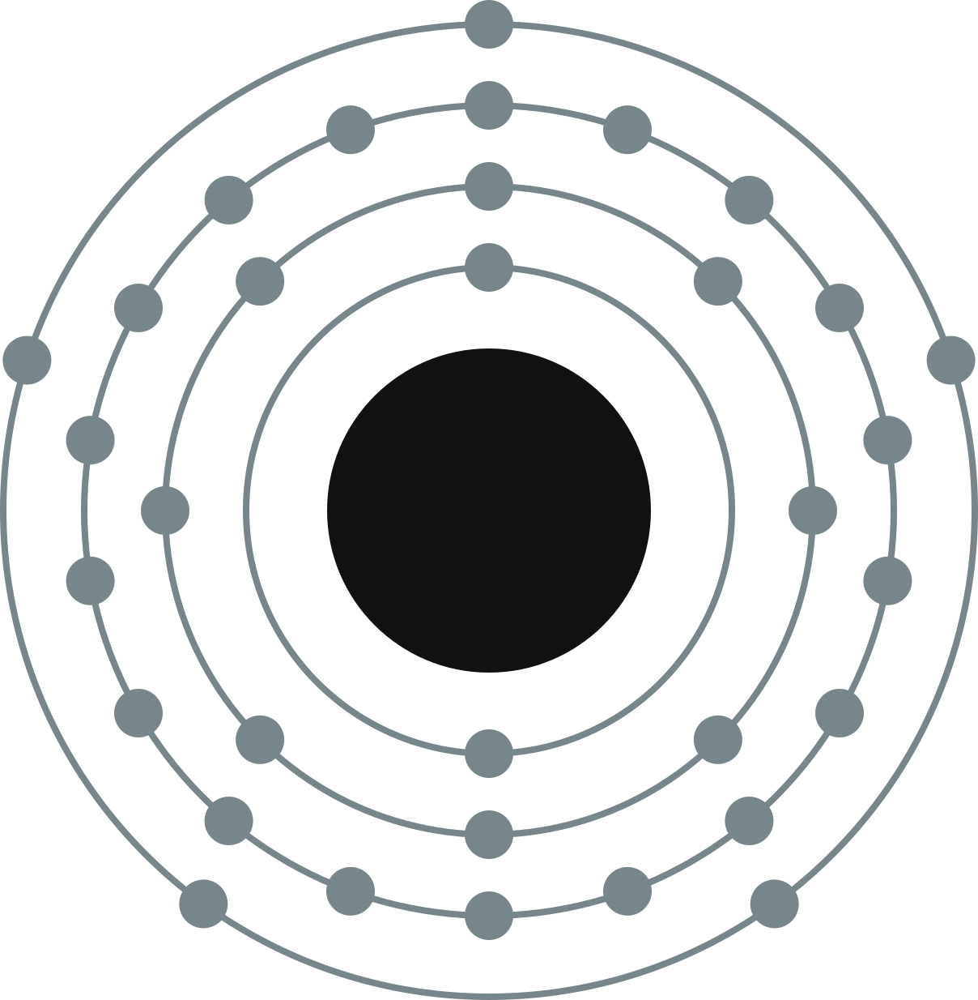

ARSENIC
Arsenic occurs naturally in pure crystalline form and also in several minerals, usually with sulfur or with metals.
Arsenic is an element known to ancient man and important in alchemy. The pure element was officially isolated in 1250 by Albertus Magnus. Early on, arsenic compounds were added to bronze to increase its hardness.
At ordinary pressure, arsenic, like carbon dioxide, does not melt but sublimes directly into vapor. Liquid arsenic only forms under high pressures.
Arsenic has long been used as a poison, but it's readily detected. Past exposure to arsenic may be assessed by examining hair. Urine or blood tests can assay recent exposure.

Arsenic (As)
| Atomic Number | 33 |
|---|---|
| Atomic Weight | 74.921 |
| Melting Point | 871°C |
| Boiling Point | 614°C |
| Density | 5.776 g/cm3 |
| Period Number | 4 |
| Group Number | 15 |